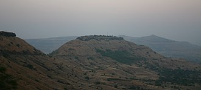

Chhatrapati Shivaji, was an Indian ruler and a member of the Bhonsle Maratha clan. Shivaji carved out an enclave from the declining Adilshahi sultanate of Bijapur that formed the genesis of the Maratha Empire. In 1674, he was formally crowned the Chhatrapati of his realm at Raigad Fort.
Over the course of his life, Shivaji engaged in both alliances and hostilities with the Mughal Empire, the Sultanate of Golkonda, Sultanate of Bijapur and the European colonial powers. Shivaji's military forces expanded the Maratha sphere of influence, capturing and building forts, and forming a Maratha navy. Shivaji established a competent and progressive civil rule with well-structured administrative organisations. He revived ancient Hindu political traditions, court conventions and promoted the usage of the Marathi and Sanskrit languages, replacing Persian in court and administration.
Shivaji's legacy was to vary by observer and time, but nearly two centuries after his death, he began to take on increased importance with the emergence of the Indian independence movement, as many Indian nationalists elevated him as a proto-nationalist and hero of the Hindus.
Early Life
Shivaji was born in the hill-fort of Shivneri, near the city of Junnar, which is now in Pune district. Scholars disagree on his date of birth. The Government of Maharashtra lists 19 February as a holiday commemorating Shivaji's birth (Shivaji Jayanti).Shivaji was named after a local deity, the goddess Shivai.Shivaji's father Shahaji Bhonsle was a Maratha general who served the Deccan Sultanates.His mother was Jijabai, the daughter of Lakhuji Jadhavrao of Sindhkhed, a Mughal-aligned sardar claiming descent from a Yadav royal family of Devagiri.
Shivaji belonged to Maratha family of Bhonsle clan.[23] His paternal grandfather Maloji (1552–1597) was an influential general of Ahmadnagar Sultanate, and was awarded the epithet of "Raja". He was given deshmukhi rights of Pune, Supe, Chakan and Indapur for military expenses. He was also given Fort Shivneri for his family's residence (1590).
At the time of Shivaji's birth, power in the Deccan was shared by three Islamic sultanates: Bijapur, Ahmednagar, and Golkonda.
At the time of Shivaji's birth, power in the Deccan was shared by three Islamic sultanates: Bijapur, Ahmednagar, and Golkonda. Shahaji often changed his loyalty between the Nizamshahi of Ahmadnagar, the Adilshah of Bijapur and the Mughals, but always kept his jagir(fiefdom) at Pune and his small army.
Background and context:
In 1636, the Adil Shahi sultanate of Bijapur invaded the kingdoms to its south.The sultanate had recently become a tributary state of the Mughal empire.It was being helped by Shahaji, who at the time was a chieftain in the Maratha uplands of western India. Shahaji was looking for opportunities of rewards of jagir land in the conquered territories, the taxes on which he could collect as an annuity.
Shahaji was a rebel from brief Mughal service. Shahaji's campaigns against the Mughals, supported by the Bijapur government, were generally unsuccessful. He was constantly pursued by the Mughal army and Shivaji and his mother Jijabai had to move from fort to fort.
In 1636, Shahaji joined in the service of Bijapur and obtained Poona as a grant. Shivaji and Jijabai settled in Poona. Shahaji, being deployed in Bangalore by the Bijapuri ruler Adilshah, appointed Dadoji Kondadeo as administrator. Kondadeo died in 1647 and Shivaji took over the administration. One of his first acts directly challenged the Bijapuri government.
Conflict with Bijapur sultanate
In 1646, 16-year-old Shivaji took the Torna Fort, taking advantage of the confusion prevailing in the Bijapur court due to the ailment of the Sultan, and seized the large treasure he found there.In the following two years, Shivaji took several important forts near Pune, including Purandhar, Kondhana and Chakan. Also, he brought Supa, Baramati and Indapur under his direct control. He used the treasure found at Torna to build a new fort Rajgad, which served as his capital for over a decade.After this, Shivaji turned to the Konkan and took possession of the important town of Kalyan.Bijapur government took note of these happenings and sought to take action. On 25 July 1648, Shahaji was imprisoned by a fellow Maratha sardar called, Baji Ghorpade under the orders of Bijapur government, in a bid to contain Shivaji.
Shahaji was released in 1649 after the capture of Jinji secured Adilshah's position in Karnataka. During 1649–1655 Shivaji paused in his conquests and quietly consolidated his gains.Following his father's release, Shivaji resumed raiding, and in 1656, under controversial circumstances, killed Chandrarao More, a fellow Maratha feudatory of Bijapur, and seized the valley of Javali, near the present-day hill station of Mahabaleshwar, from him. In addition to the Bhonsale and the More families, many others including Sawant of Sawantwadi, Ghorpade of Mudhol, Nimbalkar of Phaltan, Shirke, Mane and Mohite also served Adilshahi of Bijapur, many with Deshmukhi rights. Shivaji adopted different strategies to subdue these powerful families such as forming marital alliances, dealing directly with village Patil to bypass the Deshmukhs, or fighting them.Shahaji in his later years had an ambivalent attitude to his son, and disavowed his rebellious activities.He told the Bijapuris to do whatever they wanted with Shivaji. Shahaji died around 1664–1665 in a hunting accident.
Combact with Afzal khan:
The Bijapur sultanate was displeased at their losses to Shivaji's forces, which their vassal Shahaji disavowed. After a peace treaty with the Mughals, and the general acceptance of the young Ali Adil Shah II as the sultan, the Bijapur government became more stable, and turned its attention towards Shivaji.In 1657 the sultan, or more likely his mother and regent, sent Afzal Khan, a veteran general, to arrest Shivaji. Before engaging him, the Bijapuri forces desecrated the Tulja Bhavani Temple, holy to Shivaji's family, and the Vithoba temple at Pandharpur, a major pilgrimage site for the Hindus.
Pursued by Bijapuri forces, Shivaji retreated to Pratapgad fort, where many of his colleagues pressed him to surrender.The two forces found themselves at a stalemate, with Shivaji unable to break the siege, while Afzal Khan, having a powerful cavalry but lacking siege equipment, was unable to take the fort. After two months, Afzal Khan sent an envoy to Shivaji suggesting the two leaders meet in private outside the fort to parley.
The two met in a hut at the foothills of Pratapgad fort on 10 November 1659. The arrangements had dictated that each come armed only with a sword, and attended by one follower. Shivaji, suspecting Afzal Khan would arrest or attack him, wore armour beneath his clothes, concealed a bagh nakh (metal "tiger claw") on his left arm, and had a dagger in his right hand.The precise transpirings are not recoverable to historical certainty and remains enmeshed with legends in Maratha sources; however, they agree upon the fact that the protagonists landed themselves in a physical struggle which would prove fatal for Khan.Khan's dagger failed to pierce Shivaji's armour, but Shivaji had him disemboweled; he then fired a cannon to signal his hidden troops to attack the Bijapuri army.
In the ensuing Battle of Pratapgarh fought on 10 November 1659, Shivaji's forces decisively defeated the Bijapur Sultanate's forces. More than 3,000 soldiers of the Bijapur army were killed and one sardar of high rank, two sons of Afzal Khan and two Maratha chiefs were taken prisoner.After the victory, a grand review was held by Shivaji below Pratapgarh. The captured enemy, both officers and men, were set free and sent back to their homes with money, food and other gifts. Marathas were rewarded accordingly.
Siege of Panhala
Having defeated the Bijapuri forces sent against him, Shivaji's army marched towards the Konkan and Kolhapur, seizing Panhala fort, and defeating Bijapuri forces sent against them under Rustam Zaman and Fazl Khan in 1659.In 1660,Adilshah sent his general Siddi Jauhar to attack Shivaji's southern border, in alliance with the Mughals who planned to attack from the north. At that time, Shivaji was encamped at Panhala fort with his forces. Siddi Jauhar's army besieged Panhala in mid-1660, cutting off supply routes to the fort. During the bombardment of Panhala, Siddi Jauhar purchased grenades from the English at Rajapur to increase his efficacy, and also hired some English artillerymen to assist in his bombardment of the fort, conspicuously flying a flag used by the English. This perceived betrayal angered Shivaji, who in December would retaliate by plundering the English factory at Rajapur and capturing four of the factors, imprisoning them until mid-1663.
After months of siege, Shivaji negotiated with Siddi Jauhar and handed over the fort on 22 September 1660, withdrawing to Vishalgad Shivaji retook Panhala in 1673
Battle of Pavan Khind
Shivaji escaped from Panhala by cover of night, and as he was pursued by the enemy cavalry, his Maratha sardar Baji Prabhu Deshpande of Bandal Deshmukh, along with 300 soldiers, volunteered to fight to the death to hold back the enemy at Ghod Khind ("horse ravine") to give Shivaji and the rest of the army a chance to reach the safety of the Vishalgad fort.
In the ensuing Battle of Pavan Khind, the smaller Maratha force held back the larger enemy to buy time for Shivaji to escape. Baji Prabhu Deshpande was wounded but continued to fight until he heard the sound of cannon fire from Vishalgad signalling Shivaji had safely reached the fort, on the evening of 13 July 1660.Ghod Khind (khind meaning "a narrow mountain pass") was later renamed Paavan Khind ("sacred pass") in honour of Bajiprabhu Deshpande, Shibosingh Jadhav, Fuloji, and all other soldiers who fought in there.
Conflict with Mughals
Until 1657, Shivaji maintained peaceful relations with the Mughal Empire. Shivaji offered his assistance to Aurangzeb who then, was the Mughal viceroy of the Deccan and son of the Mughal emperor, in conquering Bijapur in return for formal recognition of his right to the Bijapuri forts and villages under his possession. Dissatisfied with the Mughal response, and receiving a better offer from Bijapur, he launched a raid into the Mughal Deccan.[56] Shivaji's confrontations with the Mughals began in March 1657, when two of Shivaji's officers raided the Mughal territory near Ahmednagar.[57] This was followed by raids in Junnar, with Shivaji carrying off 300,000 hun in cash and 200 horses.[58] Aurangzeb responded to the raids by sending Nasiri Khan, who defeated the forces of Shivaji at Ahmednagar. However, Aurangzeb's countermeasures against Shivaji were interrupted by the rainy season and his battle of succession with his brothers for the Mughal throne following the illness of the emperor Shah Jahan.
Attacks on Shaista Khan and surat
Upon the request of Badi Begum of Bijapur, Aurangzeb, now the Mughal emperor, sent his maternal uncle Shaista Khan, with an army numbering over 150,000 along with a powerful artillery division in January 1660 to attack Shivaji in conjunction with Bijapur's army led by Siddi Jauhar. Shaista Khan, with his better equipped and well provisioned army of 80,000 seized Pune. He also took the nearby fort of Chakan, besieging it for a month and a half before breaching the walls.[60] Shaista Khan pressed his advantage of having a larger, better provisioned and heavily armed Mughal army and made inroads into some of the Maratha territory, seizing the city of Pune and establishing his residence at Shivaji's palace of Lal Mahal.
On the night of 5 April, 1663, Shivaji led a daring night attack on Shaista Khan's camp.[62] He, along with his 400 men, attacked Shaista Khan's mansion, broke into Khan's bedroom and wounded him. Khan lost three fingers.[63] In the scuffle, Shaista Khan's son, several of his wives, servants and soldiers were killed.[64] The Khan took refuge with the Mughal forces outside of Pune, and Aurangzeb punished him for this embarrassment with a transfer to Bengal.
In retaliation for Shaista Khan's attacks, and to replenish his now-depleted treasury, in 1664 Shivaji sacked the port city of Surat, a wealthy Mughal trading centre.
Treaty of Purandar
The attacks on Shaista Khan and Surat enraged Aurangzeb. In response, he sent the Rajput Mirza Raja Jai Singh I with an army numbering around 15,000 to defeat Shivaji.[67] Throughout 1665, Jai Singh's forces pressed Shivaji, with their cavalry razing the countryside, and their siege forces investing Shivaji's forts. The Mughal commander succeeded in luring away several of Shivaji's key commanders, and many of his cavalrymen, into Mughal service. By mid-1665, with the fortress at Purandar besieged and near capture, Shivaji was forced to come to terms with Jai Singh.
In the Treaty of Purandar, signed between Shivaji and Jai Singh on 11 June 1665, Shivaji agreed to give up 23 of his forts, keeping 12 for himself, and pay compensation of 400,000 gold hun to the Mughals.[68] Shivaji agreed to become a vassal of the Mughal empire, and to send his son Sambhaji, along with 5,000 horsemen, to fight for the Mughals in the Deccan as a mansabdar.
Arrest in Agra and escape
In 1666, Aurangzeb summoned Shivaji to Agra (though some sources instead state Delhi), along with his nine-year-old son Sambhaji. Aurangzeb's planned to send Shivaji to Kandahar, now in Afghanistan, to consolidate the Mughal empire's northwestern frontier. However, in the court, on 12 May 1666, Shivaji was made to stand alongside relatively low-ranking nobles, men he had already defeated in battle.[71] Shivaji took offence and stormed out of court,[72] and was promptly placed under house arrest. Ram Singh, son of Jai Singh, guaranteed custody of Shivaji and his son.
Shivaji's position under house arrest was perilous, as Aurangzeb's court debated whether to kill him or continue to employ him. Jai Singh, having assured Shivaji of his personal safety, tried to influence Aurangzeb's decision.[74] Meanwhile, Shivaji hatched a plan to free himself. He sent most of his men back home and asked Ram Singh to withdraw his guarantees to the emperor for the safe custody of himself and his son and surrendered himself to Mughal forces.Shivaji then pretended to be ill and began sending out large baskets packed with sweets to be given to the Brahmins and poor as penance.On 17 August 1666, by putting himself in one of the large baskets and his son Sambhaji in another, Shivaji escaped and left Agra.
Peace with the Mughals
After Shivaji's escape, hostilities with the Mughals ebbed, with Mughal sardar Jaswant Singh acting as an intermediary between Shivaji and Aurangzeb for new peace proposals.During the period between 1666 and 1668, Aurangzeb conferred the title of raja on Shivaji. Sambhaji was also restored as a Mughal mansabdar with 5,000 horses. Shivaji at that time sent Sambhaji with general Prataprao Gujar to serve with the Mughal viceroy in Aurangabad, Prince Mu'azzam. Sambhaji was also granted territory in Berar for revenue collection.Aurangzeb also permitted Shivaji to attack the decaying Adil Shahi; the weakened Sultan Ali Adil Shah II sued for peace and granted the rights of sardeshmukhi and chauthai to Shivaji.
Reconquest
The peace between Shivaji and the Mughals lasted until 1670. At that time Aurangzeb became suspicious of the close ties between Shivaji and Mu'azzam, who he thought might usurp his throne, and may even have been receiving bribes from Shivaji.[88][89] Also at that time, Aurangzeb, occupied in fighting the Afghans, greatly reduced his army in the Deccan; many of the disbanded soldiers quickly joined Maratha service.[90] The Mughals also took away the jagir of Berar from Shivaji to recover the money lent to him a few years earlier.[91] In response, Shivaji launched an offensive against the Mughals and recovered a major portion of the territories surrendered to them in a span of four months.
Shivaji sacked Surat for second time in 1670; the English and Dutch factories were able to repel his attack, but he managed to sack the city itself, including plundering the goods of a Muslim prince from Mawara-un-Nahr who was returning from Mecca. Angered by the renewed attacks, the Mughals resumed hostilities with the Marathas, sending a force under Daud Khan to intercept Shivaji on his return home from Surat, but were defeated in the Battle of Vani-Dindori near present-day Nashik.
In October 1670, Shivaji sent his forces to harass the English at Bombay; as they had refused to sell him war materiel, his forces blocked English woodcutting parties from leaving Bombay. In September 1671, Shivaji sent an ambassador to Bombay, again seeking materiel, this time for the fight against Danda-Rajpuri. The English had misgivings of the advantages Shivaji would gain from this conquest, but also did not want to lose any chance of receiving compensation for his looting their factories at Rajapur. The English sent Lieutenant Stephen Ustick to treat with Shivaji, but negotiations failed over the issue of the Rajapur indemnity. Numerous exchanges of envoys followed over the coming years, with some agreement as to the arms issues in 1674, but Shivaji was never to pay the Rajapur indemnity before his death, and the factory there dissolved at the end of 1682.
Battles of Umrani and Nesari
In 1674, Prataprao Gujar, the commander-in-chief of the Maratha forces, was sent to push back the invading force led by the Bijapuri general, Bahlol Khan. Prataprao's forces defeated and captured the opposing general in the battle, after cutting-off their water supply by encircling a strategic lake, which prompted Bahlol Khan to sue for peace. In spite of Shivaji's specific warnings against doing so, Prataprao released Bahlol Khan, who started preparing for a fresh invasion.
Shivaji sent a displeased letter to Prataprao, refusing him audience until Bahlol Khan was re-captured. Upset by his commander's rebuke, Prataprao found Bahlol Khan and charged his position with only six other horsemen, leaving his main force behind. Prataprao was killed in combat; Shivaji was deeply grieved on hearing of Prataprao's death, and arranged for the marriage of his second son, Rajaram, to Prataprao's daughter. Prataprao was succeeded by Hambirrao Mohite, as the new sarnaubat (commander-in-chief of the Maratha forces). Raigad Fort was newly built by Hiroji Indulkar as a capital of nascent Maratha kingdom.
Coronation
Shivaji had acquired extensive lands and wealth through his campaigns, but lacking a formal title, he was still technically a Mughal zamindar or the son of a Bijapuri jagirdar, with no legal basis to rule his de facto domain. A kingly title could address this and also prevent any challenges by other Maratha leaders, to whom he was technically equal.[e] it would also provide the Hindu Marathas with a fellow Hindu sovereign in a region otherwise ruled by Muslims.
The preparation for the proposed coronation began in 1673. However, some controversial problems delayed the coronation by almost a year.[99] Controversy erupted amongst the Brahmins of Shivaji's court: they refused to crown Shivaji as a king because that status was reserved for those of the kshatriya (warrior) varna in Hindu society.[100] Shivaji was descended from a line of headmen of farming villages, and the Brahmins accordingly categorised him as being of the shudra (cultivator) varna.[101][102] They noted that Shivaji had never had a sacred thread ceremony, and did not wear the thread, which a kshatriya would.[101] Shivaji summoned Gaga Bhatt, a pandit of Varanasi, who stated that he had found a genealogy proving that Shivaji was descended from the Sisodias, and thus indeed a kshatriya, albeit one in need of the ceremonies befitting his rank.[103] To enforce this status, Shivaji was given a sacred thread ceremony, and remarried his spouses under the Vedic rites expected of a kshatriya.[104][105] However, following historical evidence, Shivaji's claim to Rajput, and specifically Sisodia ancestry may be interpreted as being anything from tenuous at best, to inventive in a more extreme reading.
On 28 May, Shivaji performed penance for not observing Kshatriya rites by his ancestors' and himself for so long. Then he was invested by Gaga Bhatt with the sacred thread.[107] On insistence of other Brahmins, Gaga Bhatt dropped the Vedic chant and initiated Shivaji in a modified form of the life of the twice-born, instead of putting him on a par with the Brahmins. Next day, Shivaji made atonement for the sins, deliberate or accidental, committed in his own lifetime.[108] He was weighed separately against seven metals including gold, silver and several other articles like fine linen, camphor, salt, sugar etc. All these metals and articles along with a lakh of hun were distributed among the Brahmins. But even this failed to satisfy the greed of the Brahmins. Two of the learned Brahmins pointed out that Shivaji, while conducting his raids, had burnt cities involving the death of Brahmins, cows, women and children and he could be cleansed of this sin for a price of Rs. 8,000, and Shivaji paid this amount.[108] Total expenditure made for feeding the assemblage, general alms giving, throne and ornaments approached 1.5 million Rupees.
Shivaji was crowned king of the Maratha Empire (Hindawi Swaraj) in a lavish ceremony on 6 June 1674 at Raigad fort.[110][111] In the Hindu calendar it was on the 13th day (trayodashi) of the first fortnight of the month of Jyeshtha in the year 1596.[112] Gaga Bhatt officiated, pouring water from a gold vessel filled with the waters of the seven sacred rivers Yamuna, Indus, Ganges, Godavari, Narmada, Krishna and Kaveri over Shivaji's head, and chanted the Vedic coronation mantras. After the ablution, Shivaji bowed before Jijabai and touched her feet. Nearly fifty thousand people gathered at Raigad for the ceremonies.[113][114] Shivaji was entitled Shakakarta ("founder of an era")[1] and Chhatrapati ("sovereign"). He also took the title of Haindava Dharmodhhaarak (protector of the Hindu faith).
Shivaji's mother Jijabai died on 18 June 1674. The Marathas summoned Nischal Puri Goswami, a tantrik priest, who declared that the original coronation had been held under inauspicious stars, and a second coronation was needed. This second coronation on 24 September 1674 had a dual-use, mollifying those who still believed that Shivaji was not qualified for the Vedic rites of his first coronation, by performing a less-contestable additional ceremony.
Conquest of southern India
Beginning in 1674, the Marathas undertook an aggressive campaign, raiding Khandesh (October), capturing Bijapuri Ponda (April 1675), Karwar (mid-year), and Kolhapur (July).[118] In November, the Maratha navy skirmished with the Siddis of Janjira, but failed to dislodge them.[119] Having recovered from an illness, and taking advantage of a civil war that had broken out between the Deccanis and the Afghans at Bijapur, Shivaji raided Athani in April 1676.
In the run-up to his expedition, Shivaji appealed to a sense of Deccani patriotism, that Southern India was a homeland that should be protected from outsiders.[121][122] His appeal was somewhat successful, and in 1677 Shivaji visited Hyderabad for a month and entered into a treaty with the Qutubshah of the Golkonda sultanate, agreeing to reject his alliance with Bijapur and jointly oppose the Mughals. In 1677, Shivaji invaded Karnataka with 30,000 cavalry and 40,000 infantry, backed by Golkonda artillery and funding.[123] Proceeding south, Shivaji seized the forts of Vellore and Gingee;[124] the latter would later serve as a capital of the Marathas during the reign of his son Rajaram I.
Shivaji intended to reconcile with his half-brother Venkoji (Ekoji I), Shahaji's son by his second wife, Tukabai (née Mohite), who ruled Thanjavur (Tanjore) after Shahaji. The initially promising negotiations were unsuccessful, so whilst returning to Raigad, Shivaji defeated his half-brother's army on 26 November 1677 and seized most of his possessions in the Mysore plateau. Venkoji's wife Dipa Bai, whom Shivaji deeply respected, took up new negotiations with Shivaji and also convinced her husband to distance himself from Muslim advisors. In the end, Shivaji consented to turn over to her and her female descendants many of the properties he had seized, with Venkoji consenting to a number of conditions for the proper administration of the territories and maintenance of Shahji's memorial (samadhi).
Death and Succession
The question of Shivaji's heir-apparent was complicated. Shivaji confined his son to Panhala in 1678, only to have the prince escape with his wife and defect to the Mughals for a year. Sambhaji then returned home, unrepentant, and was again confined to Panhala.
Shivaji died around 3–5 April 1680 at the age of 50,[129] on the eve of Hanuman Jayanti. The cause of Shivaji's death is disputed. British records states that Shivaji died of bloody flux being sick for 12 days.[f] In a contemporary work in Portuguese, the Biblioteca Nacional de Lisboa, the recorded cause of death of Shivaji is anthrax.[131][132] However, Krishnaji Anant Sabhasad, author of Sabhasad Bakhar, the biography of Shivaji has mentioned fever as the cause of death of Shivaji.[133][132] Putalabai, the childless eldest of the surviving wives of Shivaji committed sati by jumping into his funeral pyre. Another surviving spouse, Sakwarbai, was not allowed to follow suit because she had a young daughter.[128] There were also allegations, though doubted by later scholars, that his second wife Soyarabai had poisoned him in order to put her 10-year-old son Rajaram on the throne.
After Shivaji's death, Soyarabai made plans with various ministers of the administration to crown her son Rajaram rather than her stepson Sambhaji. On 21 April 1680, ten-year-old Rajaram was installed on the throne. However, Sambhaji took possession of Raigad Fort after killing the commander, and on 18 June acquired control of Raigad, and formally ascended the throne on 20 July.[135] Rajaram, his wife Janki Bai, and mother Soyrabai were imprisoned, and Soyrabai executed on charges of conspiracy that October.
Governance
The Council of Eight Ministers, or Ashta Pradhan Mandal, was an administrative and advisory council set up by Shivaji.[137] It consisted of eight ministers who regularly advised Shivaji on political and administrative matters. The eight ministers were as follows:
Ashta Pradhan Manda
- Minister
- Peshwa or Prime Minister
- Amatya or Finance Minister
- Mantri or Chronicler
- Summant or Dabir or Foreign Secretary
- Sachiv or Shurn Nawis or Home Secretary
- Panditrao or Ecclesiastical Head
- Nyayadhis or Chief Justice
- Senapati/Sari Naubat or Commander-in-Chief
- Duty
- General Administration
- Maintaining Public accounts
- Maintaining Court records
- All matters related to relationships with other states
- Managing correspondence of the king
- Religious matters
- Civil and Military justice
- All matters related to army of the king
Except the Panditrao and Nyayadhis all other ministers held military commands, their civil duties often being performed by deputies.
Promotion of Marathi and Sanskrit
In his court, Shivaji replaced Persian, the common courtly language in the region, with Marathi, and emphasised Hindu political and courtly traditions. Shivaji's reign stimulated the deployment of Marathi as a tool of systematic description and understanding.[138] Shivaji's royal seal was in Sanskrit. Shivaji commissioned one of his officials to make a comprehensive lexicon to replace Persian and Arabic terms with their Sanskrit equivalents. This led to production of ‘Rājavyavahārakośa’, the thesaurus of state usage in 1677.
Religious policy

Shivaji is known for his liberal and tolerant religious policies. While Hindus were relieved to practice their religion freely under a Hindu ruler, Shivaji not only allowed Muslims to practice without harassment, but supported their ministries with endowments.[139] When Aurangzeb imposed the Jizya tax on non-Muslims on 3 April 1679, Shivaji wrote a strict letter to Aurangzeb criticising his tax policy. He wrote
In strict justice, the Jizya is not at all lawful. If you imagine piety in oppressing and terrorising the Hindus, you ought to first levy the tax on Jai Singh I. But to oppress ants and flies is not at all valour nor spirit. If you believe in Quran, God is the lord of all men and not just of Muslims only. Verily, Islam and Hinduism are terms of contrast. They are used by the true Divine Painter for blending the colours and filling in the outlines. If it is a mosque, the call to prayer is chanted in remembrance of God. If it is a temple, the bells are rung in yearning for God alone. To show bigotry to any man's religion and practices is to alter the words of the Holy Book.
However, Gijs Kruijtzer, in his book Xenophobia in Seventeenth-Century India argues that the roots of modern communalism (the antagonism between “communities” of Hindus and Muslims) first appeared in the decade 1677–1687, in the interplay between Shivaji and the Mughal emperor Aurangzeb (though Shivaji died in 1680).[143][page needed] During the sack of Surat in 1664, Shivaji was approached by Ambrose, a Capuchin monk who asked him to spare the city's Christians. Shivaji left the Christians untouched, saying "the Frankish Padrys are good men.
Shivaji was not attempting to create a universal Hindu rule. He was tolerant to different religions and believed in syncretism. He urged Aurangzeb to act like Akbar in according respect to Hindu beliefs and places. Shivaji had little trouble forming alliances with the surrounding Muslim nations even against Hindu powers. He also did not join forces with other Hindu powers, such as the Rajputs, to fight the Mughals.[g] In his own army, Muslim leaders appear quite early. The first Pathan unit was formed in 1656. His naval admiral, Darya Sarang,[146] was a Muslim. Shivaji was said to have been a close follower of Ramdas, a Brahmin tutor who directed him towards an orthodox Hindu path, according to older Maratha histories. However, as shown by recent research, Shivaji did not meet or know Ramdas till much later in his life. Shivaji, on the other hand, relied on his own judgement throughout his career.
Seal
Seals were means to confer authenticity on official documents. Shahaji and Jijabai had Persian seals. But Shivaji, right from beginning, used Sanskrit for his seal.The seal proclaims: "This seal of Shiva, son of Shah, shines forth for the welfare of the people and is meant to command increasing respect from the universe like the first phase of the moon.
Maharaj mode of warfare
Shivaji maintained a small but effective standing army. The core of Shivaji's army consisted of peasants of the Maratha and Kunbi castes.[148] Shivaji was aware of the limitations of his army. He realised that conventional warfare methods were inadequate to confront the big, well-trained cavalry of the Mughals which was equipped with field artillery. As a result, Shivaji adopted guerilla tactics which came to know as 'Ganimi Kawa'.[149] Shivaji was a master of guerrilla warfare.[150] His strategies consistently perplexed and defeated armies sent against him. He realized that the most vulnerable point of the large, slow-moving armies of the time was supply. He utilised knowledge of the local terrain and the superior mobility of his light cavalry to cut off supplies to the enemy.[151] Shivaji refused to confront in pitched battles. Instead, he lured the enemies in difficult hills and jungles of his own choosing, catching them at a disadvantage and routing them.[152] Shivaji didn't stick to a particular tactic but used several methods to undermine his enemies as required by circumstances, like sudden raids, sweeps and ambushes and use of psychological pressure.
Military
Shivaji demonstrated great skill in creating his military organisation, which lasted until the demise of the Maratha Empire. His strategy rested on leveraging his ground forces, naval forces, and series of forts across his territory. The Maval infantry served as the core of his ground forces (reinforced with Telangi musketeers from Karnataka), supported by Maratha cavalry. His artillery was relatively underdeveloped and reliant on European suppliers, further inclining him to a very mobile form of warfare
Hill forts

Hill forts played a key role in Shivaji's strategy. He captured important forts at Murambdev (Rajgad), Torna, Kondhana (Sinhagad) and Purandar. He also rebuilt or repaired many forts in advantageous locations.[157] In addition, Shivaji built a number of forts; the number "111" is reported in some accounts, but it is likely the actual number "did not exceed 18."[158] The historian Jadunath Sarkar assessed that Shivaji owned some 240–280 forts at the time of his death.[159] Each was placed under three officers of equal status, lest a single traitor be bribed or tempted to deliver it to the enemy. The officers acted jointly and provided mutual checks and balance.
Navy
Aware of the need for naval power to maintain control along the Konkan coast, Shivaji began to build his navy in 1657 or 1659, with the purchase of twenty galivats from the Portuguese shipyards of Bassein.[161] Marathi chronicles state that at its height his fleet counted some 400 warships, though contemporary English chronicles counter that the number never exceeded 160.
With the Marathas being accustomed to a land-based military, Shivaji widened his search for qualified crews for his ships, taking on lower-caste Hindus of the coast who were long familiar with naval operations (the famed "Malabar pirates") as well as Muslim mercenaries.[162] Noting the power of the Portuguese navy, Shivaji hired a number of Portuguese sailors and Goan Christian converts, and made Rui Leitao Viegas commander of his fleet. Viegas was later to defect back to the Portuguese, taking 300 sailors with him.
Shivaji fortified his coastline by seizing coastal forts and refurbishing them, and built his first marine fort at Sindhudurg, which was to become the headquarters of the Maratha navy.[164] The navy itself was a coastal navy, focused on travel and combat in the littoral areas, and not intended to go far out to sea.
Expansion of Maratha Empire after Maharaj
Shivaji left behind a state always at odds with the Mughals. Soon after his death, in 1681, Aurangzeb launched an offensive in the South to capture territories held by the Marathas, the Bijapur-based Adilshahi and Qutb Shahi of Golkonda respectively. He was successful in obliterating the Sultanates but could not subdue the Marathas after spending 27 years in the Deccan. The period saw the capture, torture, and execution of Sambhaji in 1689, and the Marathas offering strong resistance under the leadership of Sambhaji's successor, Rajaram and then Rajaram's widow Tarabai. Territories changed hands repeatedly between the Mughals and the Marathas; the conflict ended in defeat for the Mughals in 1707.
Shahu, a grandson of Shivaji and son of Sambhaji, was kept prisoner by Aurangzeb during the 27-year period conflict. After the latter's death, his successor released Shahu. After a brief power struggle over succession with his aunt Tarabai, Shahu ruled the Maratha Empire from 1707 to 1749. Early in his reign, he appointed Balaji Vishwanath and later his descendants, as Peshwas (prime ministers) of the Maratha Empire. The empire expanded greatly under the leadership of Balaji's son, Peshwa Bajirao I and grandson, Peshwa Balaji Bajirao. At its peak, the Maratha empire stretched from Tamil Nadu[167] in the south, to Peshawar (modern-day Khyber Pakhtunkhwa) in the north, and Bengal, in the east. In 1761, the Maratha army lost the Third Battle of Panipat to Ahmed Shah Abdali of the Afghan Durrani Empire, which halted their imperial expansion in northwestern India. Ten years after Panipat, Marathas regained influence in North India during the rule of Madhavrao Peshwa.
In a bid to effectively manage the large empire, Shahu and the Peshwas gave semi-autonomy to the strongest of the knights, creating the Maratha Confederacy.[169] They became known as Gaekwads of Baroda, the Holkars of Indore and Malwa, the Scindias of Gwalior and Bhonsales of Nagpur. In 1775, the East India Company intervened in a succession struggle in Pune, which became the First Anglo-Maratha War. The Marathas remained the pre-eminent power in India until their defeat by the British in the Second and Third Anglo-Maratha wars (1805–1818), which left the company the dominant power in most of India.
Legacy
Shivaji was well known for his strong religious and warrior code of ethics and exemplary character.[172] He was recognized as a national hero during the Indian Independence Movement.[173] While some accounts of Shivaji state that he was greatly influenced by the Brahmin guru Samarth Ramdas, others have said that Ramdas' role has been overemphasised by later Brahmin commentators to enhance their position.
Early depictions
Shivaji was admired for his heroic exploits and clever stratagems in the contemporary accounts of English, French, Dutch, Portuguese and Italian writers.[176] Contemporary English writers compared him with Alexander, Hannibal and Julius Caesar.[177] The French traveller Francois Bernier wrote in his Travels in Mughal India:
I forgot to mention that during pillage of Sourate, Seva-ji, the Holy Seva-ji! Respected the habitation of the reverend father Ambrose, the Capuchin missionary. 'The Frankish Padres are good men', he said 'and shall not be attacked.' He spared also the house of a deceased Delale or Gentile broker, of the Dutch, because assured that he had been very charitable while alive.
Mughal depictions of Shivaji were largely negative, referring to him simply as "Shiva" without the honorific "-ji". One Mughal writer in the early 1700s described Shivaji's death as kafir bi jahannum raft (lit. 'the infidel went to Hell').
Reimagining
In the mid-19th century, Marathi social reformer Jyotirao Phule wrote his interpretation of the Shivaji legend, portraying him as a hero of the shudras and Dalits. Phule sought to use the Shivaji legends to undermine the Brahmins he accused of hijacking the narrative, and uplift the lower classes; his 1869 ballad-form story of Shivaji was met with great hostility by the Brahmin-dominated media.[180] At the end of the 19th century, Shivaji's memory was leveraged by the non-Brahmin intellectuals of Bombay, who identified as his descendants and through him claimed the kshatriya varna. While some Brahmins rebutted this identity, defining them as of the lower shudra varna, other Brahmins recognised the Marathas' utility to the Indian independence movement, and endorsed this kshatriya legacy and the significance of Shivaji.
In 1895, Indian nationalist leader Lokmanya Tilak organised what was to be an annual festival to mark the birthday of Shivaji.[182] He portrayed Shivaji as the "opponent of the oppressor", with possible negative implications concerning the colonial government.[183] Tilak denied any suggestion that his festival was anti-Muslim or disloyal to the government, but simply a celebration of a hero.[184] These celebrations prompted a British commentator in 1906 to note: "Cannot the annals of the Hindu race point to a single hero whom even the tongue of slander will not dare call a chief of dacoits...?"
One of the first commentators to reappraise the critical British view of Shivaji was M. G. Ranade, whose Rise of the Maratha Power (1900) declared Shivaji's achievements as the beginning of modern nation-building. Ranade criticised earlier British portrayals of Shivaji's state as "a freebooting Power, which thrived by plunder and adventure, and succeeded only because it was the most cunning and adventurous ... This is a very common feeling with the readers, who derive their knowledge of these events solely from the works of English historians."
In 1919, Sarkar published the seminal Shivaji and His Times, hailed as the most authoritative biography of the king since James Grant Duff's 1826 A History of the Mahrattas. A respected scholar, Sarkar was able to read primary sources in Persian, Marathi, and Arabic, but was challenged for his criticism of the "chauvinism" of Marathi historians' views of Shivaji.[187] Likewise, though supporters cheered his depiction of the killing of Afzal Khan as justified, they decried Sarkar's terming as "murder" the killing of the Hindu raja Chandrao More and his clan.
Inspiration
As political tensions rose in India in the early 20th century, some Indian leaders came to re-work their earlier stances on Shivaji's role. Jawaharlal Nehru had in 1934 noted "Some of the Shivaji's deeds, like the treacherous killing of the Bijapur general, lower him greatly in our estimation." Following a public outcry from Pune intellectuals, Congress leader T. R. Deogirikar noted that Nehru had admitted he was wrong regarding Shivaji, and now endorsed Shivaji as a great nationalist.
In 1966, the Shiv Sena (lit. 'Army of Shivaji') political party was formed to promote the interests of Marathi speaking people in the face of migration to Maharashtra from other parts of India, and the accompanying loss of power for locals. His image adorns literature, propaganda and icons of the party.
In modern times, Shivaji is considered as a national hero in India, especially in the state of Maharashtra, where he remains an important figure in the state's history. Stories of his life form an integral part of the upbringing and identity of the Marathi people.[191] Shivaji is upheld by regional political parties and also by the Maratha caste dominated Congress party's offshoots in Maharashtra, such as the Indira Congress and the Nationalist Congress Party.
In the late 20th century, Babasaheb Purandare became one of the most significant author in portraying Shivaji in his writings, leading him to be declared in 1964 as the Shiv-Shahir (lit. 'Bard of Shivaji').[193][194] However, Purandare, a Brahmin, was also accused of overemphasising the influence of Brahmin gurus on Shivaji,[192] and his Maharashtra Bhushan award ceremony in 2015 was protested by those claiming he had defamed Shivaji.
Controversy
In 1993, the Illustrated Weekly published an article suggesting that Shivaji was not opposed to Muslims per se, and that his style of governance was influenced by that of the Mughal Empire. Congress Party members called for legal actions against the publisher and writer, Marathi newspapers accused them of "imperial prejudice" and Shiv Sena called for the writer's public flogging. Maharashtra brought legal action against the publisher under regulations prohibiting enmity between religious and cultural groups, but a High Court found the Illustrated Weekly had operated within the bounds of freedom of expression.
In 2003, American academic James W. Laine published his book Shivaji: Hindu King in Islamic India to, what Ananya Vajpeyi terms, a regime of "cultural policing by militant Marathas".[198][199] As a result of this publication, the Bhandarkar Oriental Research Institute in Pune where Laine had researched was attacked by the Sambhaji Brigade.[200][201] Laine was even threatened to be arrested[198] and the book was banned in Maharashtra in January 2004, but the ban was lifted by the Bombay High Court in 2007, and in July 2010 the Supreme Court of India upheld the lifting of the ban.[202] This lifting was followed by public demonstrations against the author and the decision of the Supreme Court.
commemoration
Commemorations of Shivaji are found throughout India, most notably in Maharashtra. Shivaji's statues and monuments are found almost in every town and city in Maharashtra as well as in different places across India.[205][206][207] Other commemorations include the Indian Navy's station INS Shivaji,[208] numerous postage stamps,[209] and the main airport and railway headquarters in Mumbai.[210][211] In Maharashtra, there has been a long tradition of children building a replica fort with toy soldiers and other figures during the festival of Diwali in memory of Shivaji.
A proposal to build a giant memorial called Shiv Smarak was approved in 2016 to be located near Mumbai on a small island in the Arabian Sea. It will be 210 meters tall, making it the world's largest statue when completed in possibly 2021.
In March 2022 a statue made of gunmetal was inaugurated in Pune.